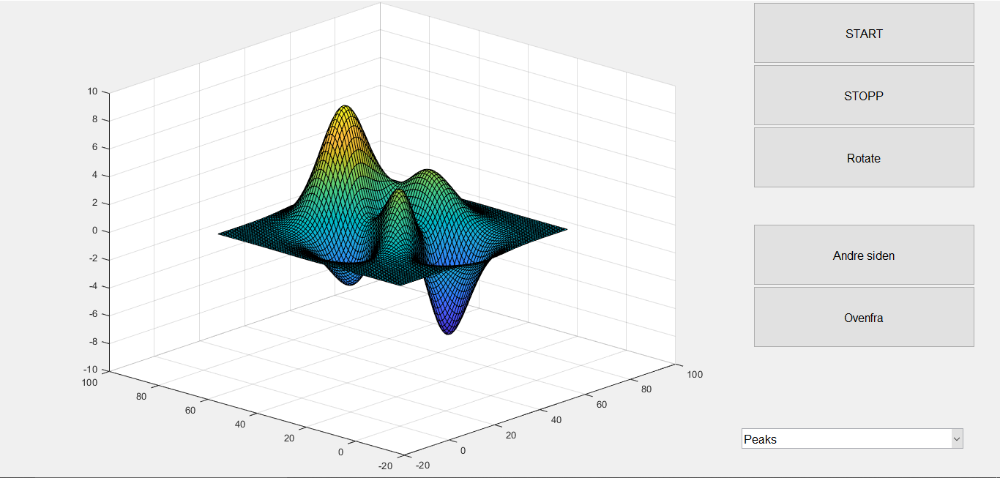
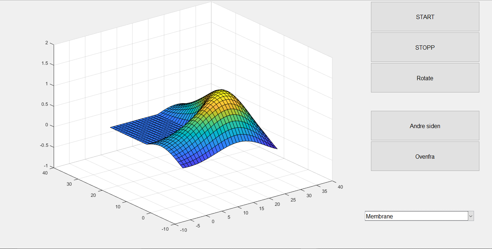
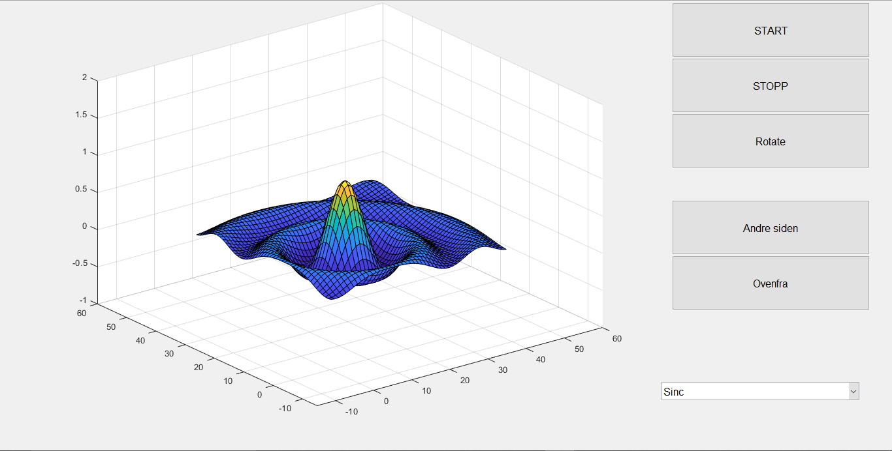
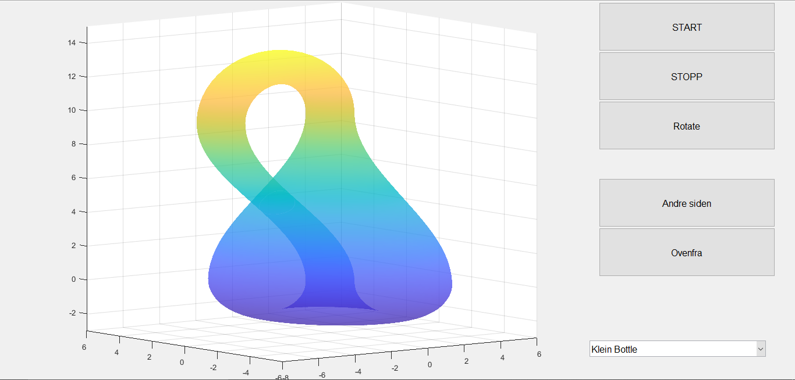

MatLab
Bilder
   Kildekode
function oblig
% Select a data set from the pop-up menu and display
f = figure('Position',[300,300,450,285]);
% Timer
tmr = timer('ExecutionMode', 'FixedRate', ...
'Period', 0.2, ...
'TimerFcn', {@timerCallback});
% Audio
[x,fs] = audioread('guitar.wav');
musicPlayer = audioplayer(x, fs);
% Construct the components.
h = [];
h(1) = uicontrol('Style','popupmenu',...
'String',{'Peaks','Membrane','Sinc', 'Klein Bottle'},...
'Position',[335,20,100,25],...
'Callback',@popup_menu_Callback);
h(2) = uicontrol('Style','pushbutton',...
'String','START','Position',[340,250,100,35],...
'Callback',@start_Callback);
h(3) = uicontrol('Style','pushbutton',...
'String','STOPP','Position',[340,215,100,35],...
'Callback',@stop_Callback);
h(4) = uicontrol('Style','pushbutton',...
'String','Rotate','Position',[340,180,100,35],...
'Callback',@rotate_Callback);
h(5) = uicontrol('Style','pushbutton',...
'String','Andre siden','Position',[340,125,100,35],...
'Callback',@side1_Callback);
h(6) = uicontrol('Style','pushbutton',...
'String','Ovenfra','Position',[340,90,100,35],...
'Callback',@ovenfra_Callback);
h(7) = axes('Units','pixels','Position',[50,30,255,255]);
% Assure resize automatically.
f.Units = 'normalized';
set(h, 'Units', 'normalized');
set(h, 'FontSize', 12);
xlabel('x value')
ylabel('y value')
zlabel('z value')
% Generate the data to plot.
peaks_data = peaks(75);
membrane_data = membrane;
[x,y] = meshgrid(-8:.5:15);
r = sqrt(x.^2+y.^2) + eps;
sinc_data = sin(r)./r;
% Create a plot in the axes.
current_data = peaks_data;
s = surf(current_data);
xlim([-20 100]);
ylim([-20 100]);
zlim([-10 10]);
% Pop-up menu callback. Read the pop-up menu Value property to
function popup_menu_Callback(source,eventdata)
% Determine the selected data set.
str = get(source, 'String');
val = get(source,'Value');
% Set current data to the selected data set.
switch str{val};
case 'Peaks' % User selects Peaks.
current_data = peaks_data;
s = surf(current_data);
xlim([-20 100]);
ylim([-20 100]);
zlim([-10 10]);
case 'Membrane'
current_data = membrane_data;
s = surf(current_data);
xlim([-10 40]);
ylim([-10 40]);
zlim([-1 2]);
case 'Sinc'
current_data = sinc_data;
s = surf(current_data);
xlim([-15 60]);
ylim([-15 60]);
zlim([-1 2]);
case 'Klein Bottle'
[x, y, z] = klein();
s = surf(x, y, z);
shading interp
alpha(.5)
xlim([-8 6]);
ylim([-6 6]);
zlim([-3 15]);
end
end
function rotate_Callback(source, eventdata)
direction = [0 0 1]
rotate(s, direction, 5)
end
function ovenfra_Callback(source, eventdata)
view([0 0 15])
end
function side1_Callback(source, eventdata)
direction = [0 0 1]
rotate(s, direction, 180)
end
function timerCallback(hObj, eventdata)
direction = [0 0 1];
rotate(s, direction, 5)
end
function start_Callback(hObj, eventdata)
start(tmr);
play(musicPlayer);
end
function stop_Callback(hObj, eventdata)
stop(tmr);
stop(musicPlayer);
end
end